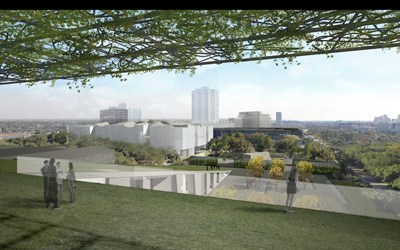

Established in 1900, the MFAH is the largest cultural institution in the southwest region. The Museum’s main campus is located in the heart of Houston’s Museum District, and comprises the Audrey Jones Beck Building, the Caroline Wiess Law Building, the Glassell School of Art, and the Lillie and Hugh Roy Cullen Sculpture Garden. Nearby, two remarkable house museums—Bayou Bend Collection and Gardens, and Rienzi—present collections of American and European decorative arts. Resources that can be found throughout the MFAH include a repertory cinema, two significant research libraries, public archives, and a conservation and storage facility. The encyclopedic collections of the MFAH cover world cultures dating from antiquity to the present and include in-depth holdings of American art, European paintings, pre-Columbian and African gold, decorative arts and design, photography, prints and drawings, Modern and Contemporary painting and sculpture, and Latin American art. The MFAH is also home to the International Center for the Arts of the Americas (ICAA), a leading research institute for 20th-century Latin American and Latino art.
The MFAH campus unites the brilliant architectural and design work of Ludwig Mies van der Rohe, Isamu Noguchi, and Rafael Moneo, part of a 75-year legacy of inspired commissions that spans from 1924—and the construction of the original Museum building designed by William Ward Watkin in the Neoclassical style—to the year 2000, when the Museum completed the Rafael Moneo-designed Audrey Jones Beck Building.
The firm Steven Holl Architects is developing plans for a comprehensive project to create a new building for 20th- and 21st-century art and a new facility for the Glassell School of Art; those structures will link to the existing gallery buildings by Ludwig Mies van der Rohe and Rafael Moneo, as well as the sculpture garden by Isamu Noguchi, establishing a 14-acre public campus in the heart of Houston’s Museum District.
